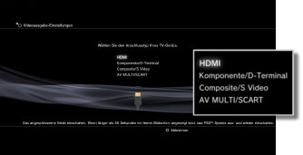
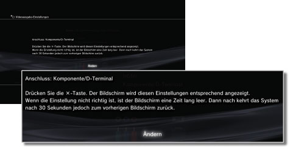
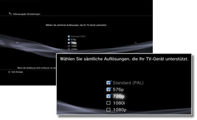
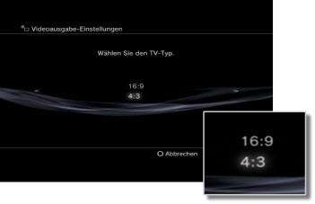
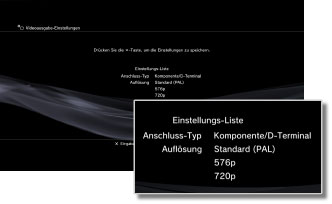

Videoausgabe-Einstellungen
Sie können Videoausgabe-Einstellungen für das System vornehmen. Wählen Sie die besten Ausgabe-Einstellungen für das verwendete Fernsehgerät.
1. |
Überprüfen Sie, welche Auflösung von Ihrem Fernsehgerät unterstützt wird.
Die Auflösung (Videomodus) hängt vom TV-Typ ab. Näheres dazu finden Sie in den mit dem Fernsehgerät gelieferten Anweisungen.
|
2. |
Wählen Sie  (Einstellungen) > (Einstellungen) >  (Anzeige-Einstellungen). (Anzeige-Einstellungen).
|
3. |
Wählen Sie [Videoausgabe-Einstellungen].
|
4. |
Wählen Sie den Anschluss-Typ am Fernsehgerät aus.
Die Auflösung (Videomodus) hängt vom verwendeten Anschluss-Typ ab.

| *1 |
Die Videomodus-Optionen hängen von der Region ab, in der das PS3™-System gekauft wurde. In Nordamerika, Asien und anderen NTSC-Regionen wird der 480i-Videomodus als [Standard (NTSC)] angezeigt. In Europa und anderen PAL-Regionen wird der 576i-Videomodus als [Standard (PAL)] angezeigt. Näheres dazu finden Sie in den mit dem Produkt gelieferten Anweisungen.
|
| *2 |
D-Terminal ist ein Anschluss-Typ, der hauptsächlich in Japan verwendet wird. Folgende Auflösungen werden von D1 bis D5 unterstützt:
D5: 1080p / 720p / 1080i / 480p / 480i
D4: 1080i / 720p / 480p / 480i
D3: 1080i / 480p / 480i
D2: 480p / 480i
D1: 480i
|
| *3 |
„S VIDEO“ ist ein Format, das hauptsächlich in Japan verwendet wird.
|
| *4 |
Der Euro-Scart-Adapter wird nur bei in Europa verkauften PS3™-Systemen mitgeliefert.
|
| *5 |
„AV MULTI“ ist ein Format, das hauptsächlich in Japan verwendet wird. Wenn [AV MULTI/SCART] ausgewählt wird, erscheint ein Bildschirm zum Auswählen des Ausgangssignaltyps.
|
| *6 |
„SCART“ ist ein Format, das hauptsächlich in Europa verwendet wird. Wenn [AV MULTI/SCART] ausgewählt wird, erscheint ein Bildschirm zum Auswählen des Ausgangssignaltyps.
|
|
5. |
Stellen Sie die Bildschirmgröße des 3D-Fernsehgeräts ein.
Stellen Sie das System auf die Größe des verwendeten Fernsehschirms ein.
Wenn das verwendete Fernsehgerät kein 3D-Fernsehgerät ist oder Sie in Schritt 4 nicht [HDMI] ausgewählt haben, wird dieser Bildschirm nicht angezeigt.
|
6. |
Ändern Sie die Videoausgabe-Einstellungen.
Ändern Sie die Auflösung für die Video-Ausgabe. Je nach dem in Schritt 4 ausgewählten Anschluss-Typ wird dieser Bildschirm möglicherweise nicht angezeigt.

|
7. |
Stellen Sie die Auflösung ein.
Wählen Sie alle Auflösungen aus, die von dem verwendeten Fernsehgerät unterstützt werden. Videos werden automatisch mit der höchsten der ausgewählten Auflösungen ausgegeben, die für die wiedergegebenen Inhalte möglich ist.*
* Die Videoauflösung wird in folgender Reihenfolge ausgewählt: 1080p > 1080i > 720p > 480p/576p > Standard (NTSC: 480i/PAL: 576i).
Wenn in Schritt 4 [Composite/S-Video] ausgewählt wird, wird der Bildschirm zum Auswählen der Auflösung nicht angezeigt.
Wenn [HDMI] ausgewählt wird, können Sie zudem auswählen, ob die Auflösung automatisch eingestellt werden soll (das HDMI-Gerät muss dazu eingeschaltet sein). In diesem Fall wird der Bildschirm zum Auswählen der Auflösung nicht angezeigt.

|
8. |
Stellen Sie den TV-Typ des Fernsehgeräts ein.
Wählen Sie den Typ des verwendeten Fernsehgeräts aus. Dies ist erforderlich, wenn nur SD-Auflösung (NTSC: 480P/480i, PAL: 576p/576i) ausgegeben werden soll, beispielsweise wenn in Schritt 4 [Composite/S-Video] oder [AV MULTI/SCART] ausgewählt wird.

|
9. |
Überprüfen Sie Ihre Einstellungen.
Vergewissern Sie sich, dass das Bild mit einer für das Fernsehgerät geeigneten Auflösung angezeigt wird. Sie können wieder einen vorherigen Bildschirm aufrufen und die Einstellungen ändern, indem Sie die  -Taste drücken. -Taste drücken.

|
10. |
Speichern Sie Ihre Einstellungen.
Die Videoausgabe-Einstellungen werden auf dem PS3™-System gespeichert. Sie können weitere Audio-Ausgangs-Einstellungen vornehmen. Einzelheiten zur Audio-Ausgabe finden Sie unter (Einstellungen) >  (Sound-Einstellungen) > [Audio Output Settings] in diesem Handbuch. (Sound-Einstellungen) > [Audio Output Settings] in diesem Handbuch.
|
Anmerkungen
- Wenn die Videoausgabe-Einstellungen nicht mit den für das verwendete Fernsehgerät erforderlichen Einstellungen übereinstimmen, erscheint beim Ändern der Auflösung möglicherweise ein leerer Bildschirm. Der Bildschirm müsste jedoch nach einer Weile automatisch wieder zur ursprünglichen Auflösung wechseln. Wenn der Bildschirm länger als 30 Sekunden leer bleibt, schalten Sie das System aus. Drücken Sie mindestens fünf Sekunden leicht die Power-Taste an der Vorderseite des Systems, um das System wieder einzuschalten. Die Videoausgabe-Einstellungen werden automatisch auf die Standardauflösung zurückgesetzt.
- Wenn ein Gerät, das nicht mit dem HDCP (High-bandwidth Digital Content Protection)-Standard kompatibel ist, über ein HDMI-Kabel an das System angeschlossen wird, können Bild und/oder Ton nicht vom System ausgegeben werden.
- Kopiergeschützte Inhalte auf einer Blu-ray Disc können nur mit 1080p ausgegeben werden, wenn Sie dieses System mit einem HDMI-Kabel an ein Gerät anschließen, das mit dem HDCP-Standard kompatibel ist.
- Wenn das PS3™-System (Serie CECH-3000/4000) mit einem D-Terminal-Kabel, einem Komponenten-AV-Kabel oder einem Multi-AV-Kabel (einem Produkt der Sony Corporation) an ein Fernsehgerät angeschlossen wird, wird die analoge High-Definition-Ausgabe gemäß der Blu-ray™-Urheberrechtsschutztechnologie (AACS (Advanced Access Content System)) eingeschränkt. BD-Videosoftware (BD-ROM) und BDs, die mit urheberrechtlich geschützten Videoinhalten (z. B. Fernsehsendungen) bespielt sind, werden im Format 480i ausgegeben.
- Schließen Sie das System (Serie CECH-4200 oder höher) mit einem HDMI-Kabel an, wenn BD-Videosoftware (BD-ROM) und BDs mit urheberrechtlich geschützten Videoinhalten ausgegeben werden sollen.